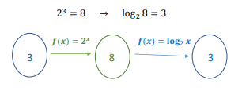
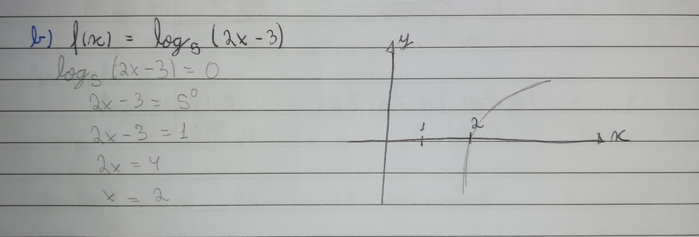

Uma função logarítmica crescente tem como sua base um número maior que 1, quando sua base for menor que 1, a função será decrescente. A função logarítmica é inversa a função exponencial, podemos usar a função logarítmica para resolver uma função exponencial, fazendo a seguinte transformação:
Sempre que o gráfico de uma função intersecta o eixo x, teremos raízes reais. Para encontrar essas raízes, devemos resolver a equação 𝑓(𝑥) = 0.
Não é toda função logarítmica que intersecta o eixo Y. Isso acontece por causa das restrições do domínio. Se o domínio for apenas de valores maiores a zero, significa que não cruzará o eixo Y.
Podemos obter outras funções logarítmicas a partir da modificação dos valores dos seguintes coeficientes: 𝒇(𝒙) = 𝑨 + 𝑩 𝐥𝐨𝐠𝒃(𝑪𝒙 + 𝑫)
Voltar